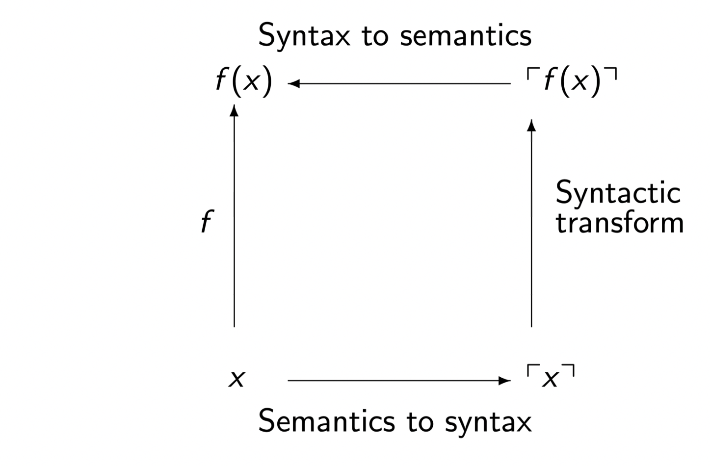
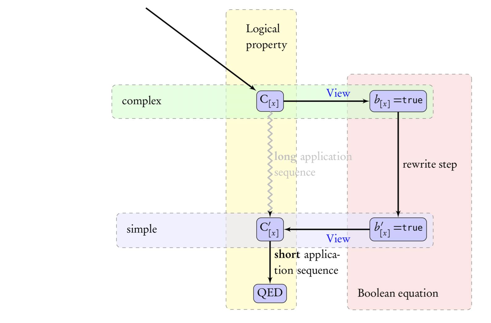

$ opam install coq-mathcomp-ssreflect
Sample proof:
Lemma drop_nseq i j x : drop i (nseq j x) = nseq (j - i) x. Proof. case:(leqP i j)=> [/subnKC {1}<-|/ltnW j_le_i]. - by rewrite nseqD drop_size_cat // size_nseq. by rewrite drop_oversize ?size_nseq // (eqP j_le_i). Qed.
Large scale: e.g. ring tactic


Prop vs boolProp are types: natural deductionbool are functions: brute-force evaluation"If a predicate is decidable, it should be defined as a boolean predicate!"